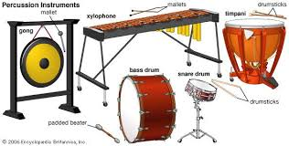

There are a few hobbies that I have that I like to do in my spare time when I'm either by myself or if I'm with my friends
Some of the hobbies that I have are:
There are quite a few video games that I like to play with my friends or that I play by myself. One of the games that I play with my friends is Marvel Rivals

Marvel Rivals is a 6v6 shooter that has came out recently that I play with my friends. There are many heros and villians that you can pick from like spider-man, venom, Thor, Loki, and many more. There are also three different class of characters that you can choose from you have your dps, tank, and healer.
Since I play all class here are a few characters that I play from each class:
| DPS | Tank | Healer |
|---|---|---|
| Squirrel Girl | Dr. Strange | Jeff |
| Star Lord | Penni Parker | Cloak and Dagger |
| Spider-man | Groot | Rocket |
It's a fun game, but it's also very competitive and you have to be in sync with your teammates and have good communication to win.
Another thing that I like to do is to hang out with my friends. Since most of my friends are in school or have work, we rarely get to see each other so usually I call/text them I we would have out like that. There are some times where we can meet up with each other like on birthdays or times where we are all free then we can hang out at the mall or the movies or at a resturant. The last time my friend group hung out together we went to go see the DeadPool and Wolverine movie.
There are a few instruments that I learned to play, a few of them are:
I still think that I'm a novice in all of these instruments but I know the basic of the instruments to learn some songs. With percussion there are a few instruments that played in my high school band class. They were the marimba and the snare and bass drum.
Of the percussion instruments the one that I played the most is the marimba, which is instruments like a xylophone where you play it with mallets and it almost plays like a paino. I also played the snare drum which you'll play with drum sticks and usually when you play the snare drum there is someone with you to play the bass drum. You have the same music sheet and have to work with each other to play them both together.